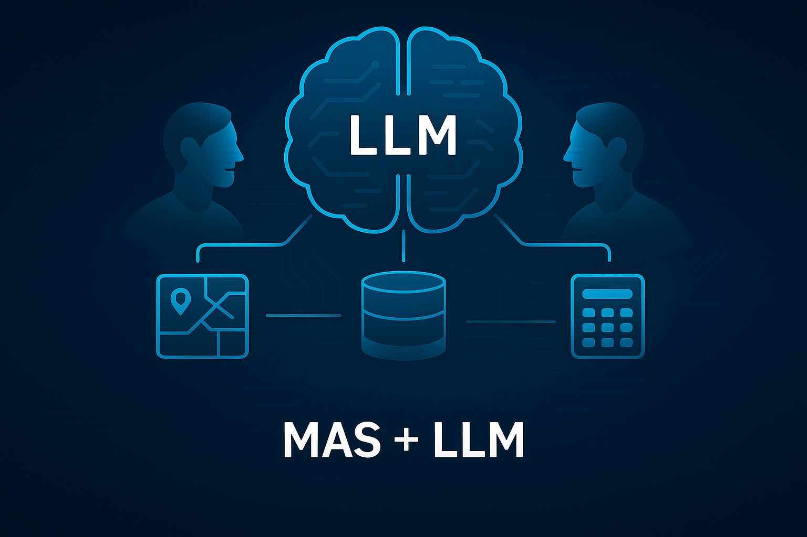

Agentic AI has gained recent popularity with the emergence of Large-Language Models (LLMs) and the rapid growth of the AI technology sector. The reinvention of technology companies entering the ‘agentic age’ mirrors a profound shift in how people interact with technology. In this article, I share a structured approach for testing Multi-Agent Systems (MAS) and provide some key questions to start you thinking critically about how your systems may be working.
History and Background: Defining MAS
There has been more than 30 years of research into intelligent agents. Traditionally, Multi-Agent Systems (MAS) referred to collections of autonomous software agents that could communicate, coordinate, and collaborate to solve complex tasks, often in domains like robotics, logistics, or distributed control systems.
The MAS + LLM Shift
What’s new today is the emergence of LLM-powered agents, where each agent is a Large Language Model (or a wrapper around one) capable of generating language, and calling external tools. This shift marks a new phase: MAS + LLM, where agents are not just rule-based or symbolic, but generative and language-driven.
This distinction is crucial:
Traditional MAS Example (Rule-Based): A fleet of warehouse robots coordinate to move packages using pre-programmed rules and message-passing protocols.
MAS + LLM Example (Generative & Tool-Enabled): That same warehouse might now use a set of LLM agents to plan a delivery route, query traffic data via APIs, and negotiate with each other in natural language to optimise timing, all while calling tools like maps, databases, and calculators.
This new architecture introduces challenges and opportunities: LLM agents can be more flexible and adaptive, but also more prone to errors like hallucinations or inconsistent tool usage.

Data Scientists and MAS: A New Mandate
In traditional ML workflows, Data Scientists might train models and deploy them behind APIs for consumption by other services. In MAS + LLM setups, those models become tools that LLM agents can call as part of a broader reasoning process. Data Scientists may now be involved in designing these tools, defining agent roles, and testing how agents interact.
Imagine, for example, that a Data Scientist is training a sentiment analysis model. Instead of embedding it in a web app, they expose it as a tool. A “Customer Feedback Agent” (LLM) calls this tool to analyse reviews, then passes results to a “Product Strategy Agent” to decide next steps. This new mandate means Data Scientists are uniquely positioned to ensure the reliability and responsible deployment of agentic systems by rigorously testing the individual tools and the complex communication logic.
When using MAS + LLM, it is essential that Data Scientists ask the right questions to assess how well a system performs on a given task. Below is a proposed framework, based on established software testing hierarchies, adapted for MAS + LLM architectures:
A Four-Level Testing Approach
1. Unit-Level Checks: Determinism and Reproducibility
These tests assess whether individual agents behave consistently when given identical inputs. This is foundational for debugging and validation.
Check: Does the agent produce the same output when given the same prompt?
Example: Recipe Planner Agent. A “Recipe Planner Agent” is asked: “Plan a healthy lunch under 500 calories.” If the response varies significantly each time, the agent may be hallucinating or poorly grounded.
Check: Does the agent consistently call the same tool when prompted?
Example: Currency Conversion Tool.An agent is asked to convert $100 USD to GBP. Check: Does the agent consistently call the convert_currency(amount, from, to) tool with the correct parameters, and is the output reliably parsed?
2. Unit + Integration: Context Management and Grounding
These tests examine how well agents manage context and avoid hallucinations by properly utilizing their tools. Failures here often stem from insufficient or poorly structured information.
Check: Does the agent hallucinate outputs instead of calling tools?
Example: Weather Forecast Agent. Prompt: “What’s the weather in London tomorrow?” If the agent guesses instead of calling the weather API, it may lack grounding or tool clarity.
Check: Does the agent fail due to context length limits?
Check: Does the agent fail to match the correct tool due to vague definitions?
Check: Does the agent handle tool errors gracefully?
Example: Data Analysis Agent. Input: [“a”, “b”, “c”] provided to a calculate_mean() tool. If the agent fails to handle the non-numeric error output from the tool, it demonstrates poor context and error management.
3. Integration Testing: Inter-Agent Communication
These tests focus on how agents coordinate and hand off tasks. This layer is particularly tricky, as agents must operate independently while still collaborating effectively.
Check: Do agents successfully hand off tasks to one another?
Check: Does changing the prompt affect handover success (e.g., changing the tone or syntax)?
Check: Are agent roles and descriptions clear enough to support successful delegation?
Example: Travel Planning Agents. A “Trip Planner Agent” delegates hotel booking to a “Hotel Booking Agent.” If the handover fails (e.g., the receiving agent doesn’t understand its input format), the receiving agent may be poorly defined or misnamed.
4. System-Level Validation: Error Propagation and Validation
These tests assess how errors are surfaced, handled, and communicated across the entire system. They also include strategies for validating the final outputs.
Check: Do the underlying tools include error checking and format validation on their outputs?
Check: Can agents detect and communicate null or failed outputs from other agents or tools?
Check: Is there a mechanism (e.g., human-in-the-loop or a designated reviewer agent) to validate final results against expected metrics?
Example: Reviewer Agent for Expense Reports. A “Finance Agent” calculates total expenses, and a “Reviewer Agent” checks the result. If the Finance Agent returns £400 instead of £350 for the input “£100 travel, £200 meals, £50 misc.,” the Reviewer Agent can flag the discrepancy.
Summary
MAS + LLM is becoming an increasingly essential part of a Data Scientist’s toolkit. With the numerous agentic orchestration frameworks available (LangGraph, Autogen, CrewAI, etc.) and that number increasing over time, understanding how to assess MAS and actions to improve them is necessary for their development. I encourage you to use this framework as a starting point to establish robust testing pipelines and governance standards within your teams.
- About the author:
- Peter Capsalis (MBA, MSc, AdvDSP) is an AI and Data Senior Manager at Ernst and Young where he leads teams of data professionals in the government and energy resources sectors to solve data challenges and deliver transformational change. He sits on the RSS AI Taskforce, and the Society’s EDI committee.
- Copyright and licence
- © 2025 Capsalis, Peter. “Testing Multi-Agent Systems in the LLM Age: A Practical Guide for Data Scientists”, Real World Data Science, December 12, 2025. URL